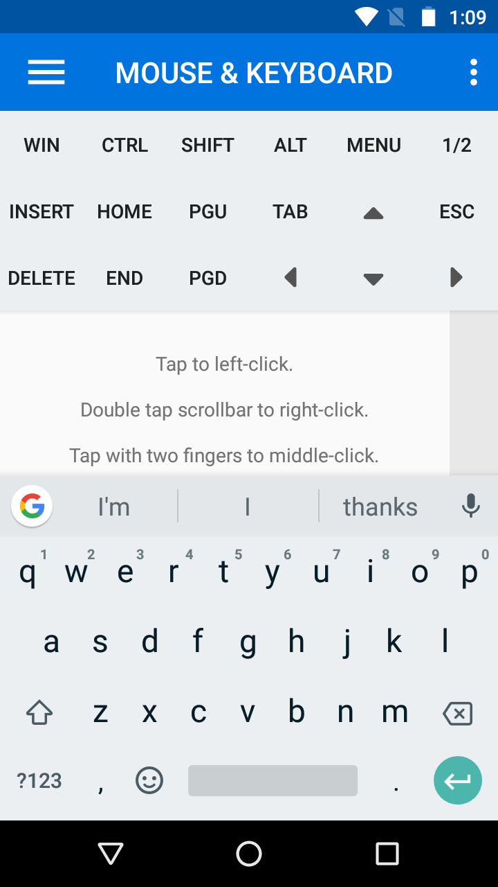

About
WifiMouse is an Android app designed and created by Logan Krumbhaar, a programmer living in Florida.The app allows you to use your phone as a remote control for your computer.
Features
- Use your phone's touchscreen just like you would a touchpad on a laptop
- Full featured keyboard with all special keys such as Ctrl, Windows key, Alt, Shift, Delete
- File manager: send and receive files between computer and phone. These screenshots were sent to my computer using the file manager!
- Screen mirror, view what's on your computer screen remotely
- Power controls and monitor settings, shutdown, log off, change brightness and more
- Start menu for applications
- Presentation remote for powerpoint or other similar applications
- All communication with server protected using AES128 encryption and password protection.
- Cross platform: available for Windows, Mac and Linux.


Demo: